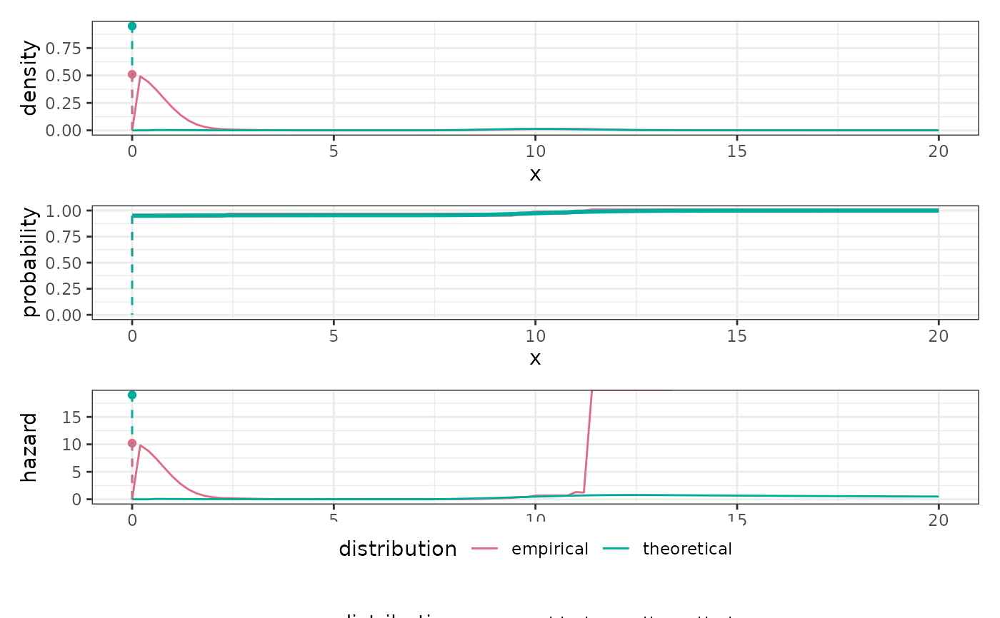

Constructs a BDEGP-Family distribution with fixed number of components and blending interval.
dist_bdegp(n, m, u, epsilon)Number of dirac components, starting with a point mass at 0.
Number of erlang components, translated by n - 0.5.
Blending cut-off, must be a positive real.
Blending radius, must be a positive real less than u.
The blending interval will be u - epsilon < x < u + epsilon.
A MixtureDistribution of
n DiracDistributions at 0 .. n - 1 and
a BlendedDistribution object with child Distributions
a TranslatedDistribution with offset n - 0.5 of an ErlangMixtureDistribution with m shapes
and a GeneralizedParetoDistribution with shape parameter restricted to [0, 1] and location parameter fixed
at u
With break u and bandwidth epsilon.
Other Distributions:
Distribution,
dist_beta(),
dist_binomial(),
dist_blended(),
dist_dirac(),
dist_discrete(),
dist_empirical(),
dist_erlangmix(),
dist_exponential(),
dist_gamma(),
dist_genpareto(),
dist_lognormal(),
dist_mixture(),
dist_negbinomial(),
dist_normal(),
dist_pareto(),
dist_poisson(),
dist_translate(),
dist_trunc(),
dist_uniform(),
dist_weibull()
dist <- dist_bdegp(n = 1, m = 2, u = 10, epsilon = 3)
params <- list(
dists = list(
list(),
list(
dists = list(
list(
dist = list(
shapes = list(1L, 2L),
scale = 1.0,
probs = list(0.7, 0.3)
)
),
list(
sigmau = 1.0,
xi = 0.1
)
),
probs = list(0.1, 0.9)
)
),
probs = list(0.95, 0.05)
)
x <- dist$sample(100, with_params = params)
plot_distributions(
theoretical = dist,
empirical = dist_empirical(x),
.x = seq(0, 20, length.out = 101),
with_params = list(theoretical = params)
)
#> Warning: Removed 31 rows containing missing values (`geom_line()`).
